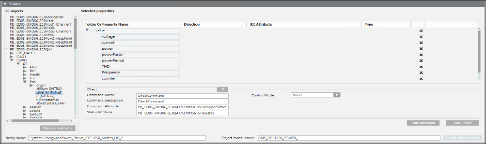

Designing the Object Model by Browsing an Online IEC 61850 Device
- You have created an IEC61850 device connection object and it displays in System Browser below the IEC61850 network.
- An IEC61850 device is connected to your system.
- Select the device connection object from the IEC61850 network.
- The details of the selected object display.
- Select the IEC61850 tab.
- In the Device Connection expander, enter values into the TCP Port and IP address fields.
- Click Save
 .
. - Expand the Browse expander and in the IEC Objects section, click Discover elements.
- The information of the IEC61850 device objects and their associated properties displays in a tree structure in the IEC objects list. The Selected properties section refreshes and displays the folder structure for the grouping of related properties of the object model and other columns such as Property Name, Direction, IEC Attribute, and Type.
- Select the required object in the tree structure and drill down to the level where the name of the property displays with its type. For example, INT8, bitString and so on. Such nodes in this tree structure are termed as leaf nodes.
- Drag the leaf nodes associated with the required properties to the appropriate folder in the Selected Properties section in order to group together related properties. Alternatively, you can create a new folder structure and thereafter drag the leaf nodes to this folder structure. To add new folders, click Add Folder. If you do not need to group the related properties in a folder, then you can drag the properties below the folder structure.
NOTE: You can only drag the leaf nodes to the Selected Properties section. The leaf nodes must not be duplicated. - The details of the property such as name, direction, IEC attribute, and type display in a columnar pattern. You can remove a property by clicking
 .
. - In the Folder Or Property Name field, enter a unique name for the property and update the direction in the Direction field.
- Click Add command to add commanding properties for the device.
- A set of fields for specifying the details of the command properties display.
- Enter the following values in each of these fields:
a. Command Folder Name: Folder name under which the device command properties are to be added. For example, if you want to issue commands to properties of a circuit breaker, then you can specify the name as Circuit_Breaker_Device.
b. Command Name: Name of the command property of the device for which you want to trigger the command. For example, if you want to trigger the open and close command for a circuit breaker on a name property, then specify Name in the Command Name field.
c. Command Description: Description of the device property for which you want to trigger the command.
d. Command Attribute: Drag and drop the control property of the device for which you want to trigger a command from the IEC objects section.
e. Status Attribute: Drag and drop the status property of the device for which you want to trigger a command from the IEC objects section. - In the Control Model drop down list, select the type of commanding from any of the following options for the device.
a. Direct: Command for the device property can be executed via Direct Mode without selecting the object first.
b. Select Before Operate (SBO): Command for the device property can be executed only after selecting the object.
c. Status Only: Command properties are not available for the device in the Extended Operation pane. - From the Libraries folder in the System Browser, drag the IEC61850 library object to the Library name field.
- The name of the library displays in the Library name field. You can view the complete hierarchy of the library object by moving your mouse pointer over the Library name field.
NOTE: In a distributed system, you cannot drag a library from a different system. - Enter a name for the object model in the Object model name field.
- Click Create object model.
- The object model with the specified details is created and displays in the Libraries folder in the System Browser. You must now set the Discipline, Subdiscipline, Type, and Subtype for the created object model.


NOTE:
The Import Rules are present in the Rules.xml file located at GMSCustomerProject\ libraries\EnergyAndPower_Device_IEC61850_HQ_1\ImportRules. You can modify the Import Rules from the Objects and Properties expander.